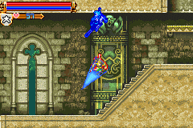

|
System
ภาคนี้นอกจากตัวละครจะสามารเพิ่ม Level และเก็บ item เพื่อสวมใส่ได้แล้ว
ยังสามารถใช้อาวุธขว้างได้เหมือนเดิม เช่น มีดสั้น, ขวาน, ไม้กางเขน เป็นต้น
อีกทั้งยังสามารถประยุกต์ใช้ควบคู่กับเวทย์มนต์ได้อีกต่างหาก
(ดูรายละเอียดเกี่ยวกับอาวุธขว้างและเวทย์มนต์ได้ที่หน้า SubWeapon)
นอกจากนั้นแล้ว ตัวละครยังมีความสามารถเฉพาะตัวอีก
เช่น สไลด์, กระโดดสองชั้น, กระโดดเตะ, พุ่งตัวกระโดด
ซึ่งความสามารหลายอย่างได้มาจาก Relic
Slide
เมื่อเก็บ Lizard Tail ได้จะสามารถ
"สไลด์" ได้ โดยการกดปุ่มบังคับ "ล่าง" + "กระโดด"
Jump Kick

เมื่อเก็บ Lizard Tail ได้ ใช้ท่านี้ด้วยการกด
"ล่าง" + "โจมตี" ระหว่างลอยตัวกลางอากาศ
Double Jump
เมื่อเก็บ Sylph Feather ได้ จะสามารถกระโดดสองครั้งได้แบบต่อเนื่อง
High Jump
เมื่อเก็บ Griffin's Wing ได้ ใช้ท่านี้ด้วยการกด
"ล่าง" "บน" + "กระโดด"
ซึ่งหากมี Crush Boot เมื่อใช้ท่านี้จะสามารถทำลายกำแพงที่ขวางทางอยู่ได้บางอัน
นอกจากนั้นแล้วตัวละครสามารถเพิ่มความสามารถได้อีกด้วย Life Max Up และ
Heart Max Up
Life Max
(Life Max Up)
Life Max Up
(Life Max Up ช่วยเพิ่ม HP ให้อีก 5)
Heart Max
(Heart Max Up)
Heart Max Up
(Heart Max Up ช่วยเพิ่มจำนวน Heart ให้อีก 5)
Warp Door
และในภาคนี้ ปราสาท Dracula ก็มี 2 หลัง
ซึ่งแต่ละปราสาทแม้จะมีแผนที่เหมือนกัน แต่มีรูปแบบของศัตรูและพื้นที่ที่แตกต่างกัน
การจะผ่านไปมาระหว่างปราสาททั้ง 2 หลัง (เรียกว่าปราสาท A และปราสาท B)
ต้องใช้ประตูวาร์ป ในการผ่าน ซึ่งประตูวาร์ปนั้น มีอยู่ 2 ชนิด คือ

Save Room

เป็นห้องที่สำคัญที่สุดใช้สำหรับ Save เกม
เมื่อเข้ามาในห้องแล้ว ต้องการ Save ให้กด "บน" จะเป็นการเพิ่ม
HP ให้จนเต็มด้วย
Boss Door
หากเจอประตูเช่นในรูป แสดงว่ามี Boss รออยู่ด้านใน
|